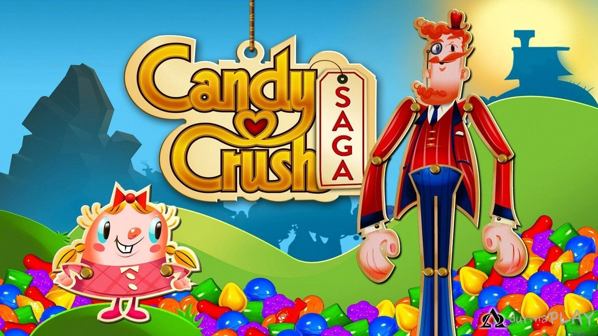
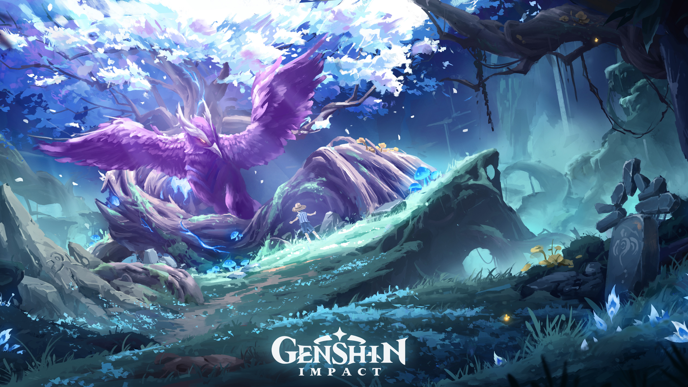

Gojo News
Gojo News
Gojo News
Gojo News
Since its debut in April 2012 and its high peak soon after, the craze of Candy Crush has somewhat toned down for all but one demographic. Candy Crush Saga, developed by King, has become a global gaming phenomenon since its release in 2012. This addictive match-three puzzle game quickly captured the hearts of millions of players with its simple yet challenging gameplay. The premise is straightforward – players match candies of the same color to clear levels and progress through a delightful and visually engaging candy-themed world. One of the key elements that contribute to Candy Crush Saga's widespread appeal is its accessibility. The game is available on multiple platforms, including smartphones, tablets, and social media platforms like Facebook. This accessibility, combined with its free-to-play model, makes it easy for players to dive into the game and enjoy a quick gaming session anytime, anywhere. The inclusion of social features, such as the ability to connect with friends and compete for high scores, adds a communal aspect that enhances the overall experience.Candy Crush Saga's success also lies in its cleverly designed levels that strike a balance between simplicity and difficulty. As players progress, they encounter new challenges and mechanics that keep the gameplay fresh and engaging. The game's vibrant and colorful graphics, coupled with catchy sound effects and music, create an immersive experience that appeals to a wide audience.Candy Crush Saga's success also lies in its cleverly designed levels that strike a balance between simplicity and difficulty. As players progress, they encounter new challenges and mechanics that keep the gameplay fresh and engaging. The game's vibrant and colorful graphics, coupled with catchy sound effects and music, create an immersive experience that appeals to a wide audience. With its widespread popularity, Candy Crush Saga has not only entertained players but has also influenced the gaming industry. Its success has inspired the development of numerous match-three games and highlighted the potential of casual games in the mobile gaming market. Whether you're a casual gamer looking for a quick diversion or a dedicated player aiming to conquer the latest levels, Candy Crush Saga continues to be a sweet treat for gamers around the world.
Genshin Impact, a popular action role-playing game developed by miHoYo, has garnered widespread acclaim for its stunning open-world design, engaging storyline, and diverse cast of characters. However, like many other online gaming communities, Genshin Impact has not been immune to instances of racism and discrimination among players. The game's expansive player base, comprising individuals from various cultural backgrounds, can sometimes lead to conflicts and instances of discriminatory behavior. Instances of racism in Genshin Impact often manifest in the form of offensive language, derogatory comments, or exclusionary behavior directed towards players based on their nationality, ethnicity, or language preferences. The game's global appeal, with players from different parts of the world interacting in a shared virtual space, highlights the need for cultural sensitivity and mutual respect within the gaming community. Developers have implemented reporting mechanisms and moderation systems to address instances of racism, but the challenge persists in fostering a truly inclusive and welcoming gaming environment. To combat racism in Genshin Impact, the community has taken initiatives to promote awareness and education. Players have organized discussions, events, and campaigns to encourage tolerance and understanding among the player base. Additionally, miHoYo has a responsibility to continuously update and refine its moderation tools to swiftly address reports of racism, fostering an atmosphere where players feel safe and respected regardless of their background. As the gaming industry continues to evolve, addressing issues of racism within virtual worlds like Genshin Impact becomes crucial for creating an environment that reflects the diverse and inclusive nature of its player base.
In a surprising turn of events, Bushiroad, the publisher behind the immensely popular Love Live mobile game, has decided to remove the game from the app store. Love Live, known for its engaging rhythm gameplay and beloved characters, has amassed a dedicated fan base since its release. The decision to take the game down has left fans puzzled and concerned about the future of their digital idol adventures. The move by Bushiroad is speculated to be a strategic decision, possibly paving the way for a major update or a revamped version of the game. Fans are eagerly awaiting an official statement from the company to shed light on the reasons behind this unexpected development. Some speculate that licensing issues, technical challenges, or a desire to rebrand and enhance the user experience may be factors contributing to the temporary removal of Love Live from the app store. As the community eagerly anticipates news from Bushiroad, the temporary absence of Love Live from the app store has sparked discussions among fans about the game's legacy and the potential for exciting changes in the near future. Whether it's a temporary hiccup or the beginning of a new chapter for Love Live, players are keeping a close eye on Bushiroad's announcements to uncover the mystery behind this unexpected turn of events.